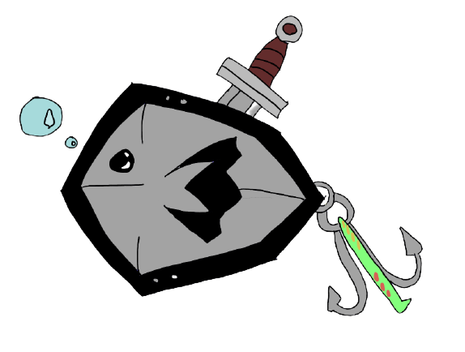

About me
Hey, I'm Zane! I'm a full stack Software Engineer at Aptima. I got hooked to computers when I was six, when I went to an internet cafe in Lebanon for the first time. I payed 50 cents to play for an hour, and booted up Counter-Strike.That's when computers captivated me. I thought the idea of being able to boot into a virtual world was unreal, as if it was something out of book. I ended up looking more into computers, and by middle school, begged my dad to buy me computer parts to build my first PC.
After that, it snowballed into an ongoing love for everything computers, and machinary as a whole. I played Counter-Strike at a high level, while also teaching myself technical skills for practical use. I went into University to study Mechanical Engineering, but sadly that was cut short due to COVID-19.
When COVID struck, I took that opportunity to explore my passion for software, and I was captivated. I bought my first Python textbook called 'Automate the Boring Stuff with Python' by Al Sweigart and loved it. This resulted in me wanting to learn more and grow as a developer, eventually leading to me joining App Academy.
App Academy is an intensive 24 week program, and was an amazing experience all together. Teaching me the fundementals of a plethora of languages, like JavaScript, Python, React, and more. The weeks were tough, consisting of 90+ hour work weeks, and basically living at my computer, but at the end, I came out a developer I am proud of. I made life long friends and skills through this experience, and it solidified my love for programming.
On my free time, I primarly read, game, and learn. I have been reading Dune, a book I've wanted to get into for a while now since it meshes my love for astrophysics and sci-fi. It's a really good read so far, and I'm excited to watch the movies coming out as soon as I'm done! Games I have been playing span from Counter-Strike(at this point its an addiction, is it not?) to League of Legends(Hard stuck gold for 3 seasons.) I also have been learning C#, as its an amazing object oriented language for creating applications and back-end framework.
Thanks for checking my website out! Make sure to check me out on Github, LinkedIn, and AngelList listed under "Contact". And if you have the time, check out my projects!
Projects
LUDUS
Live Link
Github Repo
Ludus is a web application that aids users in finding their perfect game. I implemented an in-depth search algorithm that utilizes Steam's API Library, as well as the ability for users to save relevant games to their profile. Users can also review games they have played.
This was a project I have wanted to make for a long time. It encapsulates three things that I am passionate about: programming, games, and astrophysics. It was a journey getting the Steam API to work, teaching me about the versatility of fetch calls, as well as how to write to files. While stress and anxiety was at an all time high, I'm glad I overcame the obstacles to start making a website I truly am passionate about.
Technical Feats
-
Integrated Steam’s API through a series of fetch requests to display relevant search results for users to pick through.
-
Restructured search algorithm to send requests to the backend, filtered using Python, and returned results using React/Redux to reduce the search’s time complexity.
-
Review system utilizes a single function to keep code clean and efficient.
NO AIRBNB
Live Link
Github Repo
No airbnb is a website that users can use to rent (mostly) fictional planets. Users can book specific dates on planets, and review the planets they visited. They can also give said visited planets 1 - 5 star rating, and have their bookings, reviews, and ratings displayed on their website.
This was a really fun website to make, as it was my first solo full stack project. I learned new React technologies when making it, like React Calender. React Calender made the entire process a lot smoother, since before, I was trying to use the default HTML calender, which was... not too good.
Technical Feats
-
Implemented validation logic using React Calendars to allow users to book dates, preventing any date collisions.
-
Engineered a front-end search algorithm which identifies reserved dates, temperatures, user input, and selected planetary systems.
-
Created dynamically rendered reviews which contain a user’s text input and a 1-5 star rating. Authorized users can also edit and delete these reviews, as well as see relevant reviews which are displayed on their profile.
Party Lure

Live Link
Github Repo
Party Lure is a social network website for users to find relevant parties in a fictional MMO. Users can create posts and parties for others to find and request to join. They can also comment on said posts, and accept incoming requests to their parties. All incoming requests and located on their profile page, with the parties and posts that they have made.
This was an exciting project to work on for sure, since it was the first time I had used a Python/ Flask SQLAlchemy backend.This taught me the power of Python, and just the sheer amount of things you can do with it, especially regarding data manipulation.
Technical Feats
-
Integrate AWS to ensure users the ability to fully customize profile page and edit their display image.
-
Developed a front-end search that capitalizes off React to dynamically return results.
-
Implemented the ability for authenticated users to request/accept/decline access to created Parties.
Pot Overflow
Live Link
Github Repo
Pot Overflow is a website all about food. Users can ask and answer questions spanning from "How long should I bake chocolate chip cookies?" to "How do I clean my cast iron pan?". Users can also upvote/downvote both questions and answers, and have their questions displayed on their profile page.
This was my first full stack project, and I learned a ton. Looking back at it now, I laugh at some ways we chose to implement some features. But thats what coding is all about right? Constantly learning from past experience so we can optimize future code. This was also a project that cemented my love for software, spending 14 hour days implementing features and problem solving. It taught me that there really is no better feeling then getting a feature to work after hours of coding.
Technical Feats
-
Created a like/dislike feature that utilized fetch statements to have a dynamic updating display.
-
Developed front-end using PUG to have more efficient and in-depth code.
-
Incorporated a keyword search algorithm to help users find posts that are relevant to them.
Contact
Email:
zanehamadi@gmail.com
Location: Greater Hartford, Connecticut